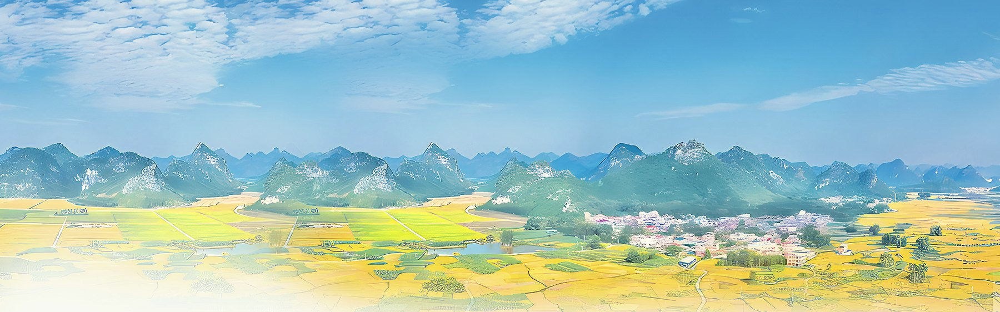

实拍 · 来宾市人民政府门户网站《来宾形象片》
13 处目的地
13 张实拍
票价核对 2026-10-18
门票区间 ¥0 – ¥128
编者按
先说清楚
先说清楚
这份笔记是怎么来的
我不是旅游局。这里的每一处地方，信息都来自政府门户、文旅局公开稿件和票务平台的公开页面，票价在 2026 年 10 月 18 日逐个核对过。景区公示价和线上渠道价经常差 20 块，我按区间写，并在详情里注明差在哪。
照片只用能拿到出处的实拍。为了做到这一点，原本 24 处里删掉了 11 处找不到图的——宁可清单短一点，也不拿示意图凑数。剩下的 13 处，每一张照片都标了出处。
来宾的景点散在 1 区 1 市 4 县，最远的两个点之间开车要三个半小时。所以先看地图，再决定住哪儿，比先看攻略有用。
资料：来宾市人民政府门户网站
来宾市文化广电和旅游局
票务平台公开页
十月 · 四处
现在这个季节，先去这四个
十月的桂中刚过雨季，云海开始稳，峡谷水还丰。这四处是这个月性价比最高的：两处要门票，一处免费。
全部目的地
全部目的地
清单 · 13 处
门票、时间、怎么去
按主题筛，或者直接往下翻。带图的是有实拍的，没有图的不代表不值得去——只代表我没找到能用的照片。
方位 · 1 区 1 市 4 县
先把地图摊开
金秀在东边的山里，忻城在西北，武宣在东南。从金秀到忻城开车三个半小时，中间还隔着两座山。住错地方，一天就没了。
时令 · 十二个月
什么时候来，比去哪儿更重要
五月看杜鹃，七月进谷避暑，十一月赶盘王节，一月泡温泉。来错了月份，同样的地方会差很多。
味觉 · 12 样
酸、香、糯、鲜
壮瑶风味打底：红糟提酸，糯米管饱，油茶醒神。来宾的物价，会让你多点两个菜。
全部 12 样
全部 12 样
到了之后
五件小事
交通、住宿、预算和一点当地礼节。看完再出发，少走一半弯路。
关于照片
站内实拍分别来自来宾市/金秀县/武宣县人民政府门户网站与来宾市文化广电和旅游局发布的公开图文，每张图下方标注了具体出处，版权归原摄影者所有，此处仅作非商业展示。因未取得可用实拍，已从清单中删除莲花山、圣堂湖、银杉森林公园、瑶族博物馆、武宣文庙、麒麟山人遗址、蓬莱洲、四月八岭、运江古镇、瑶天下民宿、政和步行街共 11 处。若你是权利人并希望撤下某张图，请告知。
关于票价
票价核对于 2026-10-18。景区窗口价与线上渠道价长期存在 10–20 元差异，节假日另有调整；免票、半票政策以景区当日公示与身份证件为准。本文所列均为成人首道门票，不含摆渡车、索道、游船与体验项目。